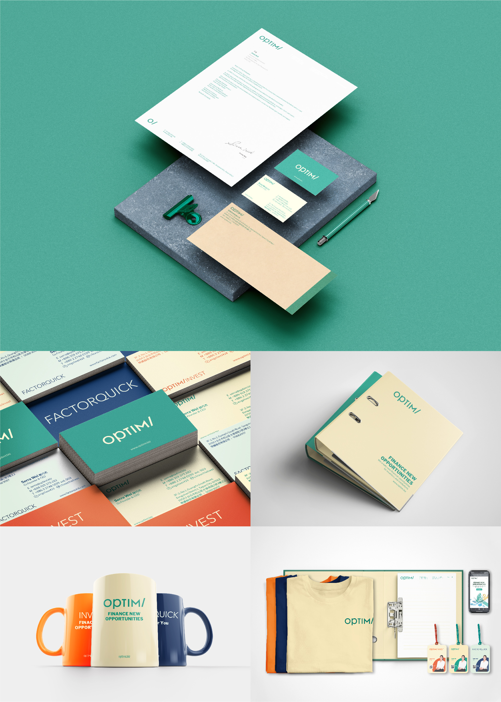

UI Designer
Interaction design, visual design and user research Project backgroundI-LIFE is a non-profit organization helping the people who are on age 18-25, lack of govement help and struggle on life, they need a new offical website to set up an outstanding image for the organiztion
Project goalBuild an new offical website based on user research to understand what users want and need to see, so that they are willing to donate and let everyone know more about the people I-LIFE helping with
Key challenge or constraintResearch Study Details
User Interview Personal, problem statement…
Insights
看到捐款對象的實質幫助，較能信任並捐款 and 捐款組織是否有將捐款人的錢善加利用，給予捐款對象實質幫助，會直接影響到捐款意願
"看網站時,想看受夢想騎士的幫助的人產生了甚麼實質改變"
Ideate Wireframe

Usability test

Affinity study
Design system
typography, colors, icons
High fidelity prototype